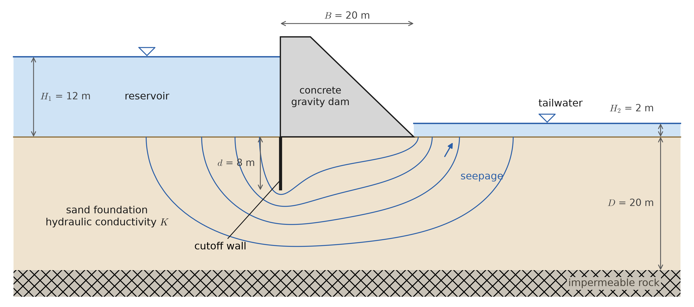
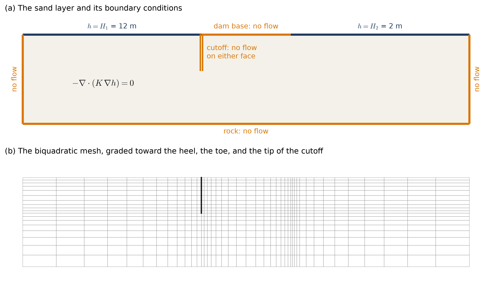
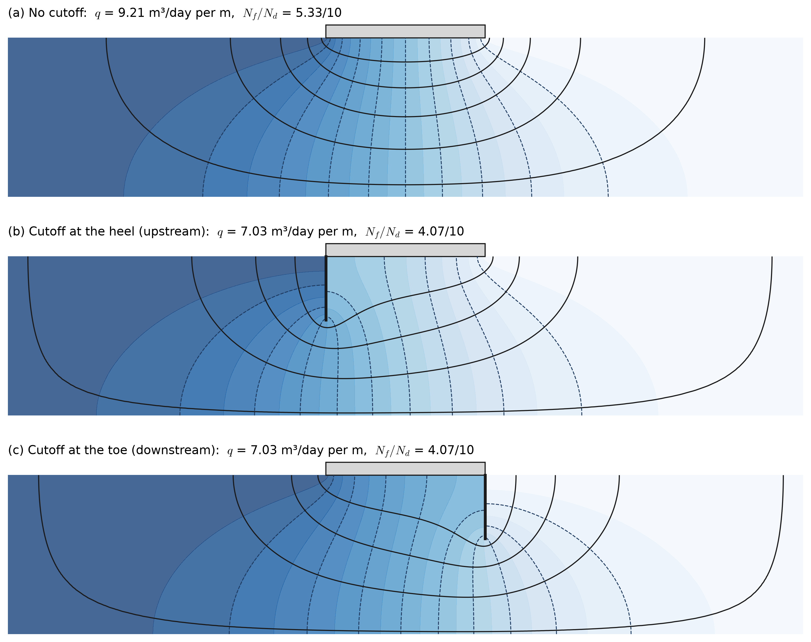
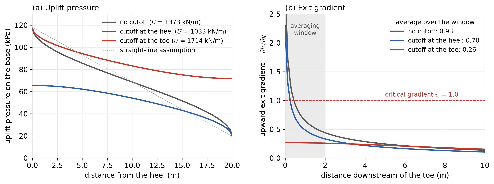
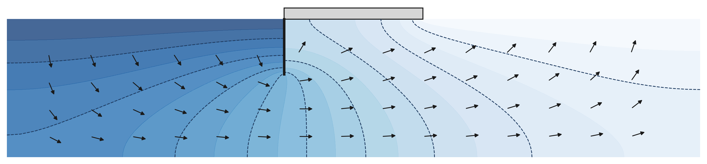
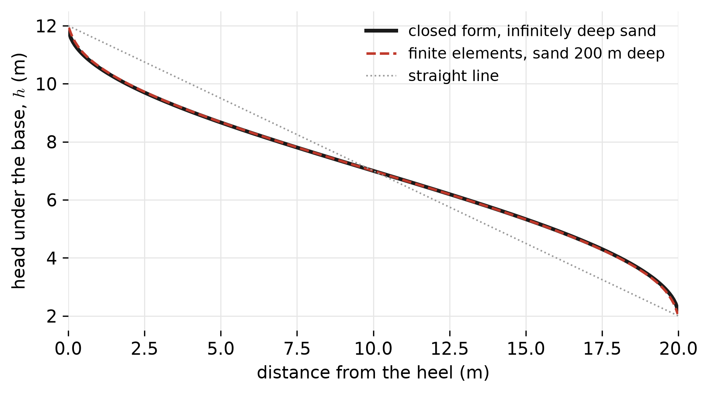

Groundwater Seepage Under a Dam
This page is one of the application pages for Class 24. It applies the scalar boundary value problem of this course to steady groundwater flow beneath a concrete dam, and computes the quantities that a geotechnical engineer would check: how much water passes beneath the dam, how hard the water pushes up on the dam, and whether the water emerging downstream could carry soil with it.
The physical problem

Water in the reservoir seeps into the sand, passes beneath the dam, and emerges downstream, as shown in Figure 1. The concrete and the rock are effectively impermeable compared to the sand, so all of the flow is in the sand. Three consequences of this flow matter for the design of the dam.
- Seepage loss. The water lost beneath the dam must be acceptable for the purpose of the reservoir.
- Uplift. The water beneath the dam is under pressure, and this pressure pushes up on the base of the dam. The upward force reduces the dam’s resistance to sliding and overturning, and must be included in its stability analysis.
- Piping. Where the water emerges upward at the ground surface downstream, it drags on the soil grains. If the upward gradient is large enough, it can lift the soil and carry it away, starting an erosion channel that grows back toward the reservoir beneath the dam. This process, called piping, has caused many dam failures.
A cutoff wall, such as a line of sheet piles or a wall of concrete or grout, lengthens the path that the water must travel. This page compares a dam with no cutoff, with a cutoff at the heel (upstream), and with a cutoff at the toe (downstream).
The quantities and their units
| quantity | symbol | units | value here | role in the boundary value problem |
|---|---|---|---|---|
| total head | \(h\) | m | 2 to 12 | the unknown \(u\) |
| elevation above the ground surface | \(z\) | m | \(-20\) to 0 | |
| water pressure | \(p\) | kPa | \(p = \gamma_w\,(h - z)\) | |
| unit weight of water | \(\gamma_w\) | kN/m³ | 9.81 | |
| hydraulic conductivity | \(K\) | m/s | 2 × 10⁻⁵ | the coefficient \(\kappa\) |
| Darcy flux (discharge per unit area) | \(\underline{v}\) | m/s | the flux \(-\kappa\nabla u\) | |
| seepage rate per meter of dam | \(q\) | m³/s per m | a boundary flux | |
| hydraulic gradient | \(i\) | – | \(-\nabla h\cdot\underline{n}\) |
The hydraulic conductivity used here, 2 × 10⁻⁵ m/s, is typical of a fine to medium sand. Hydraulic conductivities of natural soils range over many orders of magnitude, from about \(10^{-2}\) m/s for clean gravel to below \(10^{-9}\) m/s for clay, and the value for a particular site is rarely known more precisely than within a factor of a few.
The governing equation
The total head combines the elevation of a point and the pressure of the water there, expressed as a height of water:
\[ h = z + \frac{p}{\gamma_w} . \]
Water flows from high total head to low total head. Darcy’s law states that the discharge per unit area is proportional to the gradient of the head,
\[ \underline{v} = -K\,\nabla h \qquad\Longleftrightarrow\qquad v_i = -K_{ij}\,h_{,j} , \]
where, for a layered soil, \(K_{ij}\) is a symmetric positive definite matrix rather than a single number. For steady flow of water through a rigid soil, the volume of water entering any small region equals the volume leaving it, so
\[ \nabla\cdot\underline{v} = 0 . \]
Substituting Darcy’s law gives
\[ -\nabla\cdot\left(K\,\nabla h\right) = 0 \qquad\Longleftrightarrow\qquad -\left(K_{ij}\,h_{,j}\right)_{,i} = 0 , \]
which is the Poisson Equation with \(u = h\), \(\underline{\underline{\kappa}} = K\), and \(f = 0\). A well that injects or extracts water would appear as a source term \(f\). Note that on this page, following the convention of groundwater engineering, \(h\) denotes the total head, not the Neumann flux; the flux entering through a boundary is written \(-\underline{v}\cdot\underline{n} = (K\nabla h)\cdot\underline{n}\).
Boundary conditions

Each part of the boundary of the sand layer in Figure 2 receives one condition.
- The floor of the reservoir (\(z = 0\), upstream of the dam): the water pressure is hydrostatic, \(p = \gamma_w H_1\), so \(h = 0 + H_1 = 12\) m. This is a Dirichlet condition.
- The floor of the tailwater (\(z = 0\), downstream of the dam): similarly, \(h = H_2 = 2\) m.
- The base of the dam, both faces of the cutoff wall, and the top of the rock: no water crosses them, so \(\underline{v}\cdot\underline{n} = 0\), which is the Neumann condition with zero flux.
- The two far ends of the model: the real sand layer continues further upstream and downstream. The model is cut off 40 m from the dam, and these boundaries are assumed to carry no flow. This assumption is checked later on this page.
The cutoff wall needs special treatment in the mesh. It is thin, so it is modeled as a line, but the head on its upstream face is very different from the head on its downstream face. Along the wall, the elements on the two sides therefore do not share nodes, so that each face has its own values of \(h\), and the wall becomes a part of the boundary on each side. Below the bottom of the wall, the elements share nodes again as usual.
The solver therefore receives \(\underline{\underline{\kappa}} = K\), \(f = 0\), \(g = 12\) m on the reservoir floor and \(g = 2\) m on the tailwater floor, and zero Neumann data on every other boundary.
The solution: flow nets

Figure 3 shows the computed head beneath the dam. The dashed lines are equipotentials, along which the head is constant, drawn every meter from 11 m to 3 m. The solid lines are flow lines, the paths followed by the water. In an isotropic soil, the flow is perpendicular to the equipotentials, and the two families of lines together form a flow net.
The flow lines were computed with a second solution on the same mesh, for the stream function \(\psi\). The stream function is constant along every flow line, and the difference in \(\psi\) between two flow lines is the discharge between them. The base of the dam and the cutoff wall form one flow line, so \(\psi = 0\) there, and the rock and the far ends form another, with \(\psi = q\), the total seepage rate. Along the reservoir and tailwater floors, where the flow enters and leaves, \(\nabla\psi\cdot\underline{n} = 0\). This is again a problem of the same form, with the types of the boundary conditions exchanged, which is solved with the same code.
Before computers, flow nets were sketched by hand, and the seepage was estimated from the number of flow channels \(N_f\) and head drops \(N_d\) as \(q = K\,\Delta H\,N_f/N_d\), where \(\Delta H = H_1 - H_2\). The computed flow nets give the same estimate: with no cutoff, there are 5.33 flow channels for 10 head drops of 1 m, so that \(q = K \times 10\text{ m} \times\) 0.533.
Quantities of interest
Seepage rate
The seepage rate per meter of dam is the total flow entering through the reservoir floor. It is computed from the reactions at the Dirichlet nodes there, as described on the Class 24 page, and is listed in Table 2. With no cutoff, \(q\) = 9.21 m³ per day for each meter of dam, so a dam 200 m long would lose about 1842 m³ per day. A cutoff 8 m deep, at either end of the dam, reduces this by about 24%. The dimensionless ratio \(q/(K\,\Delta H)\), which depends only on the geometry, is 0.533 without a cutoff and 0.407 with one.
Uplift on the base
Along the base of the dam, \(z = 0\), so the water pressure is \(p = \gamma_w\,h\), and the total upward force per meter of dam is
\[ U = \int_0^B \gamma_w\,h(x,0)\;dx , \]
which is computed with one-dimensional quadrature along the element faces that form the base.

Figure 4 (a) shows the pressure along the base. Without a cutoff, the uplift force is 1373 kN per meter, which equals the value from the common linear assumption (1373 kN/m) because the layer is symmetric about the middle of the dam, although the distribution is not linear. A cutoff at the heel takes most of the head loss across the wall, and reduces the uplift to 1033 kN/m. A cutoff at the toe does the opposite: it holds the water beneath the dam at a higher head, and increases the uplift to 1714 kN/m.
Exit gradient and piping
Soil at the ground surface downstream begins to lift when the upward gradient \(i = -\partial h/\partial z\) reaches the critical gradient
\[ i_c = \frac{G_s - 1}{1 + e} , \]
where \(G_s\) is the specific gravity of the soil grains and \(e\) is the void ratio. For a sand with \(G_s\) = 2.65 and \(e\) = 0.65, \(i_c\) = 1.0.
Figure 4 (b) shows that the gradient increases without bound toward the toe of the dam when there is no cutoff there. This is a singular point, where a no-flow boundary (the base) meets a fixed-head boundary (the ground surface) on a straight line. As described on the Class 24 page, the gradient at such a point does not converge with refinement and should not be reported. Instead, the gradient is averaged over a short length, here the first 2 m downstream of the toe. This average equals the flow leaving through those 2 m, divided by \(K\) and by 2 m, and the flow is simply the value of the stream function at the end of the window. Table 2 lists the average gradient and the corresponding factor of safety \(F_s = i_c/i_{avg}\).
| no cutoff | cutoff at the heel | cutoff at the toe | |
|---|---|---|---|
| seepage rate \(q\) (m³/day per m) | 9.21 | 7.03 | 7.03 |
| \(q/(K\,\Delta H)\) | 0.533 | 0.407 | 0.407 |
| uplift force \(U\) (kN/m) | 1373 | 1033 | 1714 |
| average exit gradient, first 2 m | 0.93 | 0.70 | 0.26 |
| factor of safety against piping, \(i_c/i_{avg}\) | 1.1 | 1.4 | 3.8 |
The two positions of the cutoff wall reduce the seepage equally, but they affect the other two quantities in opposite ways. A cutoff at the heel reduces the uplift by 25% but improves the factor of safety against piping only modestly, to 1.4. A cutoff at the toe raises the factor of safety to 3.8, but increases the uplift by 25%. Since factors of safety of 3 or more against piping are commonly required, neither the dam without a cutoff nor the dam with only an upstream cutoff would be acceptable as drawn. In practice, dams often combine an upstream cutoff with a filter at the toe, which lets the water leave without carrying soil, or with drains beneath the base that relieve the uplift.
How accurate are these numbers?
Table 3 lists the quantities for the dam with an upstream cutoff on four meshes.
| mesh | nodes | \(q\) (m³/day per m) | \(U\) (kN/m) | \(i_{avg}\) from \(\psi\) | \(i_{avg}\) by integrating \(\partial h/\partial z\) |
|---|---|---|---|---|---|
| bilinear | 827 | 7.093 | 1033.0 | 0.692 | 0.500 |
| biquadratic | 3165 | 7.044 | 1032.9 | 0.697 | 0.600 |
| biquadratic, refined once | 12377 | 7.035 | 1032.9 | 0.698 | 0.630 |
| biquadratic, refined twice | 48945 | 7.030 | 1032.9 | 0.699 | 0.650 |
The seepage rate and the uplift, which are a sum of reactions and an integral of \(h\), change only in the third or fourth digit. The average exit gradient computed from the stream function converges almost as quickly. The same average computed by integrating the gradient of \(h\) along the surface converges much more slowly toward the same value, because it uses the derivative of the solution right next to the singular point. This is the general rule of the Class 24 page in a concrete case: quantities computed from values and integrals of the solution are more accurate than quantities computed from its derivatives.
When the soil is layered
Natural soils are often deposited in layers, which makes the horizontal conductivity larger than the vertical conductivity. In that case \(\underline{\underline{\kappa}}\) is the matrix \(\mathrm{diag}(k_h, k_v)\), which the solver accepts without any other change.

Figure 5 shows the result for \(k_h = 4k_v\), with \(k_v\) equal to the conductivity used above. The water now prefers to travel horizontally, and the flow is no longer perpendicular to the equipotentials, so a flow net drawn by hand with square cells would be wrong. The seepage rate rises to 16.5 m³/day per m, the uplift falls to 843 kN/m, and the average exit gradient rises to 1.15, which exceeds the critical gradient. Assuming an isotropic soil when the real soil is layered would therefore be unconservative for piping.
Checks
Balance of flow. The flow entering through the reservoir floor equals the flow leaving through the tailwater floor to within a relative difference of 10⁻¹¹, since no water is created or destroyed inside the sand.
Size of the model. Doubling the distance from the dam to the far ends of the model, from 40 m to 80 m, changes the seepage rate by 0.2% and the uplift by 0.06%, so the assumption of no flow at the far ends does not affect the results.
A problem with a known answer. For a dam with no cutoff on sand of unlimited depth, the head along the base has the closed form
\[ h(x) = H_2 + \frac{H_1 - H_2}{\pi}\,\arccos\!\left(\frac{2x - B}{B}\right), \]
where \(x\) is measured from the heel. Solving the same code with sand 200 m deep and extending 200 m on each side gives the head along the base in Figure 6, which agrees with this formula to within 0.042 m over the middle 90% of the base, out of a head drop of 10 m.

- Hand estimate. The ratio \(N_f/N_d\) counted from the computed flow nets reproduces the computed seepage rate, as it must, and a flow net sketched by hand should give a similar ratio.
Limits of the model
- Confined flow only. The sand here is fully saturated and covered by water or by the dam. Seepage through an earth dam, or toward a well in an unconfined aquifer, has a free water surface whose position is not known in advance, which makes the problem nonlinear.
- Steady state. The reservoir level is held constant; filling or drawdown requires a time-dependent analysis.
- Uniform soil. Real foundations contain layers and lenses of different conductivity. Since the hydraulic conductivity is uncertain, it is useful to note which results depend on it: the seepage rate is proportional to \(K\), but in a uniform soil the head, the uplift, and the exit gradient do not depend on \(K\) at all.
- Piping is a local process. The factor of safety computed here is a screening value. Whether erosion actually starts depends on the grain sizes and on any filters, which the model does not include.
Summary
- Steady groundwater flow is modeled by the Poisson Equation with \(u = h\), the total head, \(\underline{\underline{\kappa}} = K\), and \(f = 0\). Reservoir floors are Dirichlet boundaries, and impermeable surfaces are Neumann boundaries with zero flux.
- A thin impermeable wall is represented by a slit in the mesh, along which neighboring elements do not share nodes.
- The seepage rate is a sum of reactions; the uplift is an integral of the head along the base; the flow lines come from a second solve for the stream function.
- The exit gradient is singular at the toe of the dam, so it is averaged over a short distance, and that average is computed most accurately from the stream function.
- A cutoff at the heel reduces seepage and uplift, a cutoff at the toe reduces the exit gradient, and layering of the soil can make piping more likely than an isotropic analysis suggests.